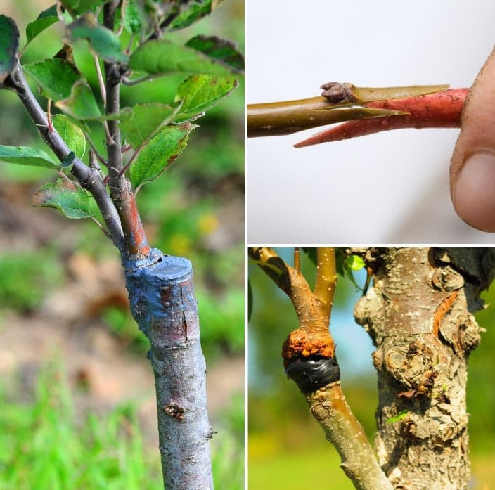

Source |
Summary |
|---|---|
|
Devi, P., Lukas, S., & Miles, C. A. (2020). Fruit maturity and quality of splice-grafted and one-cotyledon grafted watermelon. HortScience, 55(7), 1090-1098. https://journals.ashs.org/hortsci/view/journals/hortsci/55/7/article-p1090.xml |
This study provides information on grafting, more specifically the splicing method of grafting. It expanded on slice grafting, how to perform it, and its advantages. Splice grafting was ultimately performed on basil in my experiment. |
|
Doñas-Uclés, F., Pérez-Madrid, D., Amate-Llobregat, C., Rodríguez-García, E., & Camacho-Ferre, F. (2015). Production of Pepper Cultivar Palermo Grafted onto Serrano de Morelos 2, Jalapeño, and Three Commercial Rootstocks. Hortscience, 50(7), 1018–1022. https://doi.org/10.21273/hortsci.50.7.1018 |
This study uses jalapeno peppers as rootstock, similar to how they were planned to be used in my research. It shows that jalapenos can be used as rootstock successfully, suggests that rootstocks can have significant impacts on the resulting plant, and supports the idea that different rootstocks have different effects on the final plant. |
|
Hollick, J. R., & Kubota, C. (2022). Effect of Self-and Inter-Cultivar Grafting on Growth and Nutrient Content in Sweet Basil (Ocimum basilicum L.). Frontiers in Plant Science, 13, 921440. https://www.frontiersin.org/articles/10.3389/fpls.2022.921440/full |
This study provided information on grafting using basil. Though it did not use interspecific grafting, it showed that basil could also be successfully grafted. Its grafting techniques also show that slice grafting can be successfully used on basil plants. |
|
Kumar, P., Lucini, L., Rouphael, Y., Cardarelli, M., Kalunke, R. M., & Colla, G. (2015). Insight into the role of grafting and arbuscular mycorrhiza on cadmium stress tolerance in tomato. Frontiers in Plant Science, 6, 477. https://www.frontiersin.org/articles/10.3389/f pls.2015.00477/full |
This study explained the potential benefits of interspecific grafting, which was used in my paper. It showed how different and more vigorous rootstocks could improve the stress tolerance of grafted plants. |
|
Mavlyanova, R. F., Lyan, E. E., Karimov, B. A., & Dubinin, B. V. (2020). The vegetative grafting effect on increasing tomato fruit quality. IOP Conference Series: Earth and Environmental Science (Vol. 613, No. 1, p. 012077). IOP Publishing. https://iopscience.iop.org/article/10.1088/1755-1315/613/1/012077 |
This study provides further information on the results of interspecific grafting and how it can affect the fruit of the graft hybrid. It uses cherry tomatoes as scion, setting a precedent for them being used in interspecific grafting operations. It provides information on the growing of cherry tomatoes and what to expect from certain fruit traits. In addition, this study measures the mass of the fruit, which my research planned to examine. |
|
Petran, A., & Hoover, E. (2014). Solanum torvum as a compatible rootstock in interspecific tomato grafting. Journal of Horticulture, 103(1), 2376-0354. https://www.researchgate.net/profile/Emily-Hoover-5/publication/296689414_Solanum_torvum_as_a_Compatible_ Rootstock_in_Interspecific_Tomato_Grafting/links/5b72fa50299bf14c6da2121e/Solanum-torvum-as-a-Compatible- Rootstock-in-Interspecific-Tomato-Grafting.pdf |
This study explained interspecific grafting and its potential effects. It also touched upon the unpredictability of graft compatibility which my study explores. The trials used to assess compatibility were referenced when grafting basil plants to determine potential compatibility. |
|
Soltan, M., ElAidy, F., Scheerens, J., & Kleinhenz, M. (2017). Grafting, scion and rootstock effects on survival rate, vegetative growth and fruit yield of high tunnel- grown grafted pepper (Capsicum annuum L.) plants. Crop. Sci. Tech, 5(312), 2. https://bpb-us-w2.wpmucdn.com/ u.osu.edu/dist/9/24091/files/2016/07/msoltan-acst-pepper-grftg-18-1-263j50k.pdf |
This study explains the many potential effects of grafting. It provided information relevant to my rationale and hypothesis. It also included reasons for graft failure, which occurred in my experiment. |
|
Uresti-Porras, J. G., Cabrera-De-La Fuente, M., Benavides-Mendoza, A., Olivares-Sáenz, E., Cabrera, R. I., & Juárez-Maldonado, A. (2021). Effect of graft and nano ZnO on nutraceutical and mineral content in bell pepper. Plants, 10(12), 2793. https://doi.org/10.3390/plants10122793 |
This study expands on how to graft plants. In particular, it mentions methods for ensuring that stem diameters are similar and includes information about the recovery of plants that have just been grafted. The techniques used in this study were beneficial to the research being conducted and assisted with the methodology. |
|
Vega-Alfaro, A., Bethke, P. C., & Nienhuis, J. (2021). Effects of Interspecific Grafting Between Capsicum Species on Scion Fruit Quality Characteristics. HortScience, 56(11), 1347-1353. https://doi.org/10.21273/hortsci15948-21 |
This study explores the effects that different rootstock have on fruit, similar to how my research examines the effects of grafting on the fruit of plants. Specifically, some of the things it looks at are total fruit, size, and time to mature, which were planned to be examined in my research. |
|
Yasinok, A. E., Sahin, F. I., Eyidogan, F., Kuru, M., & Haberal, M. (2009). Grafting tomato plant on tobacco plant and its effect on tomato plant yield and nicotine content. Journal of the Science of Food and Agriculture, 89(7), 1122-1128. https://doi.org/10.1002/jsfa.3555 |
This study provides a precedent for different genera and species of plants from the family Solanaceae being grafted together. It proves the significant impacts that interspecific grafting can have on the resulting fruit. The study also provides information on how to graft different plant species together. |
Image |
Source |
|---|---|
|  |
https://empressofdirt.net/plant-grafting/ |
|
https://researcher.life/blog/article/data-visualization-how-to-present-your-research-data-visually/ |
|
|
https://www.esslinger.com/millimeter-and-inch-ruler-white-plastic-7-inch-length/ |